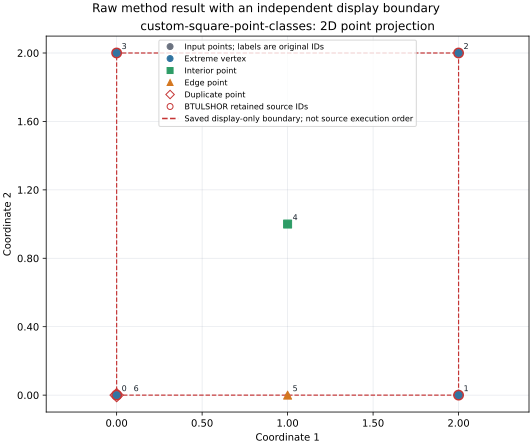

BTULSHOR source comparison
This report preserves raw outcomes from the source-faithful A06 BTULSHOR port, generic LP hull reduction, geometric QuickHull 2D, and separately identified ITIS17 paper adaptations. Their guarantees and work differ; elapsed intervals are reported per method and are not used to rank methods. The independent exact checker runs after each method and does not alter its raw result.
Primary input: custom-square-point-classes · dimension 2 · 7 points. Figure policy: Matplotlib 3.11.2 · csl-report-quantitative-v1

Fixture: custom-square-point-classes
Primary comparison records. · Raw JSON: raw/custom-square-point-classes.json
| Method ID | Raw status | Input / retained count | Original retained IDs | Work counters | Elapsed interval | Independent exact hull check |
|---|---|---|---|---|---|---|
| csl.legacy.btulshor.kpabep.source-v1 | completed | 7 / 4 | [3, 0, 1, 2] | {"pivot_count": 18, "modif_calls": 7} | 23537 ns median (n=5, range 13968–25213 ns); scope: kpabep call only; input parsing and JSON serialization excluded | {"status": "verified", "hull_equal": true, "irredundancy": true, "reason": "hulls equal; redundancy search complete", "extra_indices": []} |
| csl.geometry.quickhull-2d | completed | 7 / 4 | [0, 1, 2, 3] | {} | 13828 ns median (n=5, range 8870–22559 ns); scope: QuickHull2D call only; input parsing and JSON serialization excluded | {"status": "verified", "hull_equal": true, "irredundancy": true, "reason": "hulls equal; redundancy search complete", "extra_indices": []} |
| csl.hull.lp-membership | completed | 7 / 4 | [1, 2, 3, 6] | {"lp_calls": 7, "attempt_count": 7} | 3.1162e+06 ns median (n=5, range 2292071–4195820 ns); scope: reducer invocation with prepared LP workspace; JSON serialization excluded | {"status": "verified", "hull_equal": true, "irredundancy": true, "reason": "hulls equal; redundancy search complete", "extra_indices": []} |
| csl.hull.itis17.a43-artificial-basis | completed | 7 / 4 | [1, 2, 3, 6] | {"lp_calls": 11, "attempt_count": 11, "a43_metrics": {"candidate_solves": 7, "largest_norm_tie_breaks": 0, "phase_one_pivots": 28}} | 2.63688e+06 ns median (n=5, range 1070327–2842215 ns); scope: reducer invocation with prepared LP workspace; JSON serialization excluded | {"status": "verified", "hull_equal": true, "irredundancy": true, "reason": "hulls equal; redundancy search complete", "extra_indices": []} |
| csl.hull.itis17.a43-largest-norm-tie | completed | 7 / 4 | [1, 2, 3, 6] | {"lp_calls": 11, "attempt_count": 11, "a43_metrics": {"candidate_solves": 7, "largest_norm_tie_breaks": 0, "phase_one_pivots": 28}} | 2.68738e+06 ns median (n=5, range 998529–2884399 ns); scope: reducer invocation with prepared LP workspace; JSON serialization excluded | {"status": "verified", "hull_equal": true, "irredundancy": true, "reason": "hulls equal; redundancy search complete", "extra_indices": []} |
| csl.hull.itis17.a44-paper-farthest-incremental-lp | completed | 7 / 4 | [0, 1, 2, 3] | {"lp_calls": 8, "attempt_count": 8} | 4.09252e+06 ns median (n=5, range 1607690–4738840 ns); scope: reducer invocation with prepared LP workspace; JSON serialization excluded | {"status": "verified", "hull_equal": true, "irredundancy": true, "reason": "hulls equal; redundancy search complete", "extra_indices": []} |
Fixture: custom-a43-tie-rule
Dimension: 2 · Input points: 6 · Raw JSON: raw/custom-a43-tie-rule.json
source commit: 9979bec7ce7c72ddb6d15f35a7bf7b16e7d124d2 · compiler id: GNU · compiler version: 16.2.1 · build config: Release
Provider results are shown without a second figure; the primary visual projection is for custom-square-point-classes.
| Method ID | Raw status | Input / retained count | Original retained IDs | Work counters | Elapsed interval | Independent exact hull check |
|---|---|---|---|---|---|---|
| csl.legacy.btulshor.kpabep.source-v1 | completed | 6 / 4 | [5, 3, 1, 2] | {"pivot_count": 13, "modif_calls": 6} | 20952 ns median (n=5, range 10127–37226 ns); scope: kpabep call only; input parsing and JSON serialization excluded | {"status": "verified", "hull_equal": true, "irredundancy": true, "reason": "hulls equal; redundancy search complete", "extra_indices": []} |
| csl.geometry.quickhull-2d | completed | 6 / 4 | [2, 3, 5, 1] | {} | 19416 ns median (n=5, range 11873–44210 ns); scope: QuickHull2D call only; input parsing and JSON serialization excluded | {"status": "verified", "hull_equal": true, "irredundancy": true, "reason": "hulls equal; redundancy search complete", "extra_indices": []} |
| csl.hull.lp-membership | completed | 6 / 4 | [1, 2, 3, 5] | {"lp_calls": 6, "attempt_count": 6} | 3.50194e+06 ns median (n=5, range 1150226–3914287 ns); scope: reducer invocation with prepared LP workspace; JSON serialization excluded | {"status": "verified", "hull_equal": true, "irredundancy": true, "reason": "hulls equal; redundancy search complete", "extra_indices": []} |
| csl.hull.itis17.a43-artificial-basis | completed | 6 / 4 | [1, 2, 3, 5] | {"lp_calls": 10, "attempt_count": 10, "a43_metrics": {"candidate_solves": 6, "largest_norm_tie_breaks": 0, "phase_one_pivots": 14}} | 2.06879e+06 ns median (n=5, range 1089393–2999010 ns); scope: reducer invocation with prepared LP workspace; JSON serialization excluded | {"status": "verified", "hull_equal": true, "irredundancy": true, "reason": "hulls equal; redundancy search complete", "extra_indices": []} |
| csl.hull.itis17.a43-largest-norm-tie | completed | 6 / 4 | [1, 2, 3, 5] | {"lp_calls": 10, "attempt_count": 10, "a43_metrics": {"candidate_solves": 6, "largest_norm_tie_breaks": 2, "phase_one_pivots": 14}} | 2.05475e+06 ns median (n=5, range 1070257–2410801 ns); scope: reducer invocation with prepared LP workspace; JSON serialization excluded | {"status": "verified", "hull_equal": true, "irredundancy": true, "reason": "hulls equal; redundancy search complete", "extra_indices": []} |
| csl.hull.itis17.a44-paper-farthest-incremental-lp | completed | 6 / 4 | [5, 1, 3, 2] | {"lp_calls": 7, "attempt_count": 7} | 2.90025e+06 ns median (n=5, range 1605315–4224945 ns); scope: reducer invocation with prepared LP workspace; JSON serialization excluded | {"status": "verified", "hull_equal": true, "irredundancy": true, "reason": "hulls equal; redundancy search complete", "extra_indices": []} |
Fixture: square
Dimension: 2 · Input points: 4 · Raw JSON: raw/square.json
source commit: 9979bec7ce7c72ddb6d15f35a7bf7b16e7d124d2 · compiler id: GNU · compiler version: 16.2.1 · build config: Release
Provider results are shown without a second figure; the primary visual projection is for custom-square-point-classes.
| Method ID | Raw status | Input / retained count | Original retained IDs | Work counters | Elapsed interval | Independent exact hull check |
|---|---|---|---|---|---|---|
| csl.legacy.btulshor.kpabep.source-v1 | completed | 4 / 4 | [3, 0, 1, 2] | {"pivot_count": 9, "modif_calls": 4} | 8940 ns median (n=5, range 7683–22489 ns); scope: kpabep call only; input parsing and JSON serialization excluded | {"status": "verified", "hull_equal": true, "irredundancy": true, "reason": "hulls equal; redundancy search complete", "extra_indices": []} |
| csl.geometry.quickhull-2d | completed | 4 / 4 | [0, 1, 2, 3] | {} | 9987 ns median (n=5, range 5238–17460 ns); scope: QuickHull2D call only; input parsing and JSON serialization excluded | {"status": "verified", "hull_equal": true, "irredundancy": true, "reason": "hulls equal; redundancy search complete", "extra_indices": []} |
| csl.hull.lp-membership | completed | 4 / 4 | [0, 1, 2, 3] | {"lp_calls": 4, "attempt_count": 4} | 1.2897e+06 ns median (n=5, range 777061–2786062 ns); scope: reducer invocation with prepared LP workspace; JSON serialization excluded | {"status": "verified", "hull_equal": true, "irredundancy": true, "reason": "hulls equal; redundancy search complete", "extra_indices": []} |
| csl.hull.itis17.a43-artificial-basis | completed | 4 / 4 | [0, 1, 2, 3] | {"lp_calls": 8, "attempt_count": 8, "a43_metrics": {"candidate_solves": 4, "largest_norm_tie_breaks": 0, "phase_one_pivots": 11}} | 914160 ns median (n=5, range 869252–1100498 ns); scope: reducer invocation with prepared LP workspace; JSON serialization excluded | {"status": "verified", "hull_equal": true, "irredundancy": true, "reason": "hulls equal; redundancy search complete", "extra_indices": []} |
| csl.hull.itis17.a43-largest-norm-tie | completed | 4 / 4 | [0, 1, 2, 3] | {"lp_calls": 8, "attempt_count": 8, "a43_metrics": {"candidate_solves": 4, "largest_norm_tie_breaks": 0, "phase_one_pivots": 11}} | 939443 ns median (n=5, range 865759–1410527 ns); scope: reducer invocation with prepared LP workspace; JSON serialization excluded | {"status": "verified", "hull_equal": true, "irredundancy": true, "reason": "hulls equal; redundancy search complete", "extra_indices": []} |
| csl.hull.itis17.a44-paper-farthest-incremental-lp | completed | 4 / 4 | [0, 1, 2, 3] | {"lp_calls": 5, "attempt_count": 5} | 1.63702e+06 ns median (n=5, range 974364–2406751 ns); scope: reducer invocation with prepared LP workspace; JSON serialization excluded | {"status": "verified", "hull_equal": true, "irredundancy": true, "reason": "hulls equal; redundancy search complete", "extra_indices": []} |
Fixture: interior
Dimension: 2 · Input points: 5 · Raw JSON: raw/interior.json
source commit: 9979bec7ce7c72ddb6d15f35a7bf7b16e7d124d2 · compiler id: GNU · compiler version: 16.2.1 · build config: Release
Provider results are shown without a second figure; the primary visual projection is for custom-square-point-classes.
| Method ID | Raw status | Input / retained count | Original retained IDs | Work counters | Elapsed interval | Independent exact hull check |
|---|---|---|---|---|---|---|
| csl.legacy.btulshor.kpabep.source-v1 | completed | 5 / 4 | [3, 0, 1, 2] | {"pivot_count": 12, "modif_calls": 5} | 19136 ns median (n=5, range 8870–36947 ns); scope: kpabep call only; input parsing and JSON serialization excluded | {"status": "verified", "hull_equal": true, "irredundancy": true, "reason": "hulls equal; redundancy search complete", "extra_indices": []} |
| csl.geometry.quickhull-2d | completed | 5 / 4 | [0, 1, 2, 3] | {} | 11104 ns median (n=5, range 5727–19555 ns); scope: QuickHull2D call only; input parsing and JSON serialization excluded | {"status": "verified", "hull_equal": true, "irredundancy": true, "reason": "hulls equal; redundancy search complete", "extra_indices": []} |
| csl.hull.lp-membership | completed | 5 / 4 | [0, 1, 2, 3] | {"lp_calls": 5, "attempt_count": 5} | 1.92582e+06 ns median (n=5, range 1003139–2659858 ns); scope: reducer invocation with prepared LP workspace; JSON serialization excluded | {"status": "verified", "hull_equal": true, "irredundancy": true, "reason": "hulls equal; redundancy search complete", "extra_indices": []} |
| csl.hull.itis17.a43-artificial-basis | completed | 5 / 4 | [0, 1, 2, 3] | {"lp_calls": 9, "attempt_count": 9, "a43_metrics": {"candidate_solves": 5, "largest_norm_tie_breaks": 0, "phase_one_pivots": 14}} | 1.08835e+06 ns median (n=5, range 874979–1706377 ns); scope: reducer invocation with prepared LP workspace; JSON serialization excluded | {"status": "verified", "hull_equal": true, "irredundancy": true, "reason": "hulls equal; redundancy search complete", "extra_indices": []} |
| csl.hull.itis17.a43-largest-norm-tie | completed | 5 / 4 | [0, 1, 2, 3] | {"lp_calls": 9, "attempt_count": 9, "a43_metrics": {"candidate_solves": 5, "largest_norm_tie_breaks": 0, "phase_one_pivots": 14}} | 989240 ns median (n=5, range 907525–1218043 ns); scope: reducer invocation with prepared LP workspace; JSON serialization excluded | {"status": "verified", "hull_equal": true, "irredundancy": true, "reason": "hulls equal; redundancy search complete", "extra_indices": []} |
| csl.hull.itis17.a44-paper-farthest-incremental-lp | completed | 5 / 4 | [0, 1, 2, 3] | {"lp_calls": 6, "attempt_count": 6} | 1.56271e+06 ns median (n=5, range 1177255–2390547 ns); scope: reducer invocation with prepared LP workspace; JSON serialization excluded | {"status": "verified", "hull_equal": true, "irredundancy": true, "reason": "hulls equal; redundancy search complete", "extra_indices": []} |
Fixture: edge
Dimension: 2 · Input points: 5 · Raw JSON: raw/edge.json
source commit: 9979bec7ce7c72ddb6d15f35a7bf7b16e7d124d2 · compiler id: GNU · compiler version: 16.2.1 · build config: Release
Provider results are shown without a second figure; the primary visual projection is for custom-square-point-classes.
| Method ID | Raw status | Input / retained count | Original retained IDs | Work counters | Elapsed interval | Independent exact hull check |
|---|---|---|---|---|---|---|
| csl.legacy.btulshor.kpabep.source-v1 | completed | 5 / 4 | [3, 0, 1, 2] | {"pivot_count": 12, "modif_calls": 5} | 13479 ns median (n=5, range 10057–18996 ns); scope: kpabep call only; input parsing and JSON serialization excluded | {"status": "verified", "hull_equal": true, "irredundancy": true, "reason": "hulls equal; redundancy search complete", "extra_indices": []} |
| csl.geometry.quickhull-2d | completed | 5 / 4 | [0, 1, 2, 3] | {} | 14387 ns median (n=5, range 7543–17670 ns); scope: QuickHull2D call only; input parsing and JSON serialization excluded | {"status": "verified", "hull_equal": true, "irredundancy": true, "reason": "hulls equal; redundancy search complete", "extra_indices": []} |
| csl.hull.lp-membership | completed | 5 / 4 | [0, 1, 2, 3] | {"lp_calls": 5, "attempt_count": 5} | 1.98386e+06 ns median (n=5, range 1047838–2830342 ns); scope: reducer invocation with prepared LP workspace; JSON serialization excluded | {"status": "verified", "hull_equal": true, "irredundancy": true, "reason": "hulls equal; redundancy search complete", "extra_indices": []} |
| csl.hull.itis17.a43-artificial-basis | completed | 5 / 4 | [0, 1, 2, 3] | {"lp_calls": 9, "attempt_count": 9, "a43_metrics": {"candidate_solves": 5, "largest_norm_tie_breaks": 0, "phase_one_pivots": 15}} | 1.18284e+06 ns median (n=5, range 933506–2293328 ns); scope: reducer invocation with prepared LP workspace; JSON serialization excluded | {"status": "verified", "hull_equal": true, "irredundancy": true, "reason": "hulls equal; redundancy search complete", "extra_indices": []} |
| csl.hull.itis17.a43-largest-norm-tie | completed | 5 / 4 | [0, 1, 2, 3] | {"lp_calls": 9, "attempt_count": 9, "a43_metrics": {"candidate_solves": 5, "largest_norm_tie_breaks": 0, "phase_one_pivots": 15}} | 990218 ns median (n=5, range 876026–2564105 ns); scope: reducer invocation with prepared LP workspace; JSON serialization excluded | {"status": "verified", "hull_equal": true, "irredundancy": true, "reason": "hulls equal; redundancy search complete", "extra_indices": []} |
| csl.hull.itis17.a44-paper-farthest-incremental-lp | completed | 5 / 4 | [0, 1, 2, 3] | {"lp_calls": 6, "attempt_count": 6} | 1.26931e+06 ns median (n=5, range 1155743–4229205 ns); scope: reducer invocation with prepared LP workspace; JSON serialization excluded | {"status": "verified", "hull_equal": true, "irredundancy": true, "reason": "hulls equal; redundancy search complete", "extra_indices": []} |
Fixture: duplicate
Dimension: 2 · Input points: 5 · Raw JSON: raw/duplicate.json
source commit: 9979bec7ce7c72ddb6d15f35a7bf7b16e7d124d2 · compiler id: GNU · compiler version: 16.2.1 · build config: Release
Provider results are shown without a second figure; the primary visual projection is for custom-square-point-classes.
| Method ID | Raw status | Input / retained count | Original retained IDs | Work counters | Elapsed interval | Independent exact hull check |
|---|---|---|---|---|---|---|
| csl.legacy.btulshor.kpabep.source-v1 | completed | 5 / 4 | [3, 0, 1, 2] | {"pivot_count": 12, "modif_calls": 5} | 13480 ns median (n=5, range 9080–37086 ns); scope: kpabep call only; input parsing and JSON serialization excluded | {"status": "verified", "hull_equal": true, "irredundancy": true, "reason": "hulls equal; redundancy search complete", "extra_indices": []} |
| csl.geometry.quickhull-2d | completed | 5 / 4 | [0, 1, 2, 3] | {} | 9149 ns median (n=5, range 5657–15366 ns); scope: QuickHull2D call only; input parsing and JSON serialization excluded | {"status": "verified", "hull_equal": true, "irredundancy": true, "reason": "hulls equal; redundancy search complete", "extra_indices": []} |
| csl.hull.lp-membership | completed | 5 / 4 | [1, 2, 3, 4] | {"lp_calls": 5, "attempt_count": 5} | 1.53401e+06 ns median (n=5, range 961094–3246739 ns); scope: reducer invocation with prepared LP workspace; JSON serialization excluded | {"status": "verified", "hull_equal": true, "irredundancy": true, "reason": "hulls equal; redundancy search complete", "extra_indices": []} |
| csl.hull.itis17.a43-artificial-basis | completed | 5 / 4 | [1, 2, 3, 4] | {"lp_calls": 9, "attempt_count": 9, "a43_metrics": {"candidate_solves": 5, "largest_norm_tie_breaks": 0, "phase_one_pivots": 16}} | 1.06362e+06 ns median (n=5, range 955786–2407798 ns); scope: reducer invocation with prepared LP workspace; JSON serialization excluded | {"status": "verified", "hull_equal": true, "irredundancy": true, "reason": "hulls equal; redundancy search complete", "extra_indices": []} |
| csl.hull.itis17.a43-largest-norm-tie | completed | 5 / 4 | [1, 2, 3, 4] | {"lp_calls": 9, "attempt_count": 9, "a43_metrics": {"candidate_solves": 5, "largest_norm_tie_breaks": 0, "phase_one_pivots": 16}} | 1.24025e+06 ns median (n=5, range 910179–2587362 ns); scope: reducer invocation with prepared LP workspace; JSON serialization excluded | {"status": "verified", "hull_equal": true, "irredundancy": true, "reason": "hulls equal; redundancy search complete", "extra_indices": []} |
| csl.hull.itis17.a44-paper-farthest-incremental-lp | completed | 5 / 4 | [0, 1, 2, 3] | {"lp_calls": 6, "attempt_count": 6} | 1.77273e+06 ns median (n=5, range 1410456–3332156 ns); scope: reducer invocation with prepared LP workspace; JSON serialization excluded | {"status": "verified", "hull_equal": true, "irredundancy": true, "reason": "hulls equal; redundancy search complete", "extra_indices": []} |
Fixture: seeded-cloud
Dimension: 2 · Input points: 9 · Raw JSON: raw/seeded-cloud.json
source commit: 9979bec7ce7c72ddb6d15f35a7bf7b16e7d124d2 · compiler id: GNU · compiler version: 16.2.1 · build config: Release
Provider results are shown without a second figure; the primary visual projection is for custom-square-point-classes.
| Method ID | Raw status | Input / retained count | Original retained IDs | Work counters | Elapsed interval | Independent exact hull check |
|---|---|---|---|---|---|---|
| csl.legacy.btulshor.kpabep.source-v1 | completed | 9 / 7 | [6, 0, 1, 2, 3, 4, 5] | {"pivot_count": 20, "modif_calls": 9} | 25772 ns median (n=5, range 15156–62788 ns); scope: kpabep call only; input parsing and JSON serialization excluded | {"status": "verified", "hull_equal": true, "irredundancy": true, "reason": "hulls equal; redundancy search complete", "extra_indices": []} |
| csl.geometry.quickhull-2d | completed | 9 / 7 | [0, 1, 2, 3, 4, 5, 6] | {} | 105391 ns median (n=5, range 50147–142617 ns); scope: QuickHull2D call only; input parsing and JSON serialization excluded | {"status": "verified", "hull_equal": true, "irredundancy": true, "reason": "hulls equal; redundancy search complete", "extra_indices": []} |
| csl.hull.lp-membership | incomplete | 9 / 9 | [0, 1, 2, 3, 4, 5, 6, 7, 8] | {"lp_calls": 9, "attempt_count": 9} | 3.314e+06 ns median (n=5, range 2067389–6957298 ns); scope: reducer invocation with prepared LP workspace; JSON serialization excluded | {"status": "verified", "hull_equal": true, "irredundancy": false, "reason": "hulls equal; redundancy search complete", "extra_indices": [7, 8]} |
| csl.hull.itis17.a43-artificial-basis | incomplete | 9 / 8 | [0, 1, 2, 3, 4, 5, 6, 8] | {"lp_calls": 17, "attempt_count": 17, "a43_metrics": {"candidate_solves": 9, "largest_norm_tie_breaks": 0, "phase_one_pivots": 26}} | 2.15553e+06 ns median (n=5, range 1989306–5611515 ns); scope: reducer invocation with prepared LP workspace; JSON serialization excluded | {"status": "verified", "hull_equal": true, "irredundancy": false, "reason": "hulls equal; redundancy search complete", "extra_indices": [8]} |
| csl.hull.itis17.a43-largest-norm-tie | incomplete | 9 / 8 | [0, 1, 2, 3, 4, 5, 6, 8] | {"lp_calls": 17, "attempt_count": 17, "a43_metrics": {"candidate_solves": 9, "largest_norm_tie_breaks": 0, "phase_one_pivots": 26}} | 2.23501e+06 ns median (n=5, range 1927985–2802405 ns); scope: reducer invocation with prepared LP workspace; JSON serialization excluded | {"status": "verified", "hull_equal": true, "irredundancy": false, "reason": "hulls equal; redundancy search complete", "extra_indices": [8]} |
| csl.hull.itis17.a44-paper-farthest-incremental-lp | incomplete | 9 / 8 | [4, 5, 0, 2, 1, 3, 6, 8] | {"lp_calls": 15, "attempt_count": 15} | 3.58247e+06 ns median (n=5, range 3428468–5879917 ns); scope: reducer invocation with prepared LP workspace; JSON serialization excluded | {"status": "verified", "hull_equal": true, "irredundancy": false, "reason": "hulls equal; redundancy search complete", "extra_indices": [8]} |
Fixture: near-tolerance
Dimension: 2 · Input points: 5 · Raw JSON: raw/near-tolerance.json
source commit: 9979bec7ce7c72ddb6d15f35a7bf7b16e7d124d2 · compiler id: GNU · compiler version: 16.2.1 · build config: Release
Provider results are shown without a second figure; the primary visual projection is for custom-square-point-classes.
| Method ID | Raw status | Input / retained count | Original retained IDs | Work counters | Elapsed interval | Independent exact hull check |
|---|---|---|---|---|---|---|
| csl.legacy.btulshor.kpabep.source-v1 | completed | 5 / 4 | [3, 0, 1, 2] | {"pivot_count": 11, "modif_calls": 5} | 16622 ns median (n=5, range 14178–39950 ns); scope: kpabep call only; input parsing and JSON serialization excluded | {"status": "rejected", "hull_equal": false, "irredundancy": null, "reason": "input point 4 is outside retained hull", "extra_indices": []} |
| csl.geometry.quickhull-2d | completed | 5 / 5 | [0, 1, 2, 4, 3] | {} | 15156 ns median (n=5, range 14108–39600 ns); scope: QuickHull2D call only; input parsing and JSON serialization excluded | {"status": "verified", "hull_equal": true, "irredundancy": true, "reason": "hulls equal; redundancy search complete", "extra_indices": []} |
| csl.hull.lp-membership | incomplete | 5 / 5 | [0, 1, 2, 3, 4] | {"lp_calls": 5, "attempt_count": 5} | 1.65574e+06 ns median (n=5, range 1018854–4354082 ns); scope: reducer invocation with prepared LP workspace; JSON serialization excluded | {"status": "verified", "hull_equal": true, "irredundancy": true, "reason": "hulls equal; redundancy search complete", "extra_indices": []} |
| csl.hull.itis17.a43-artificial-basis | incomplete | 5 / 5 | [0, 1, 2, 3, 4] | {"lp_calls": 10, "attempt_count": 10, "a43_metrics": {"candidate_solves": 5, "largest_norm_tie_breaks": 0, "phase_one_pivots": 17}} | 1.24717e+06 ns median (n=5, range 1116632–3582958 ns); scope: reducer invocation with prepared LP workspace; JSON serialization excluded | {"status": "verified", "hull_equal": true, "irredundancy": true, "reason": "hulls equal; redundancy search complete", "extra_indices": []} |
| csl.hull.itis17.a43-largest-norm-tie | incomplete | 5 / 5 | [0, 1, 2, 3, 4] | {"lp_calls": 10, "attempt_count": 10, "a43_metrics": {"candidate_solves": 5, "largest_norm_tie_breaks": 0, "phase_one_pivots": 17}} | 1.12955e+06 ns median (n=5, range 1118517–1192690 ns); scope: reducer invocation with prepared LP workspace; JSON serialization excluded | {"status": "verified", "hull_equal": true, "irredundancy": true, "reason": "hulls equal; redundancy search complete", "extra_indices": []} |
| csl.hull.itis17.a44-paper-farthest-incremental-lp | incomplete | 5 / 5 | [0, 1, 2, 3, 4] | {"lp_calls": 7, "attempt_count": 7} | 1.7545e+06 ns median (n=5, range 1417371–3802261 ns); scope: reducer invocation with prepared LP workspace; JSON serialization excluded | {"status": "verified", "hull_equal": true, "irredundancy": true, "reason": "hulls equal; redundancy search complete", "extra_indices": []} |
Fixture: simplex-3d
Dimension: 3 · Input points: 5 · Raw JSON: raw/simplex-3d.json
source commit: 9979bec7ce7c72ddb6d15f35a7bf7b16e7d124d2 · compiler id: GNU · compiler version: 16.2.1 · build config: Release
Provider results are shown without a second figure; the primary visual projection is for custom-square-point-classes.
| Method ID | Raw status | Input / retained count | Original retained IDs | Work counters | Elapsed interval | Independent exact hull check |
|---|---|---|---|---|---|---|
| csl.legacy.btulshor.kpabep.source-v1 | completed | 5 / 4 | [3, 0, 1, 2] | {"pivot_count": 16, "modif_calls": 5} | 27658 ns median (n=5, range 12293–39181 ns); scope: kpabep call only; input parsing and JSON serialization excluded | {"status": "verified", "hull_equal": true, "irredundancy": true, "reason": "hulls equal; redundancy search complete", "extra_indices": []} |
| csl.geometry.quickhull-2d | unsupported_dimension | 5 / 0 | [] | {} | not applicable (unsupported dimension) | {"status": "inconclusive", "hull_equal": null, "irredundancy": null, "reason": "raw output has no valid retained source indices", "extra_indices": []} |
| csl.hull.lp-membership | incomplete | 5 / 5 | [0, 1, 2, 3, 4] | {"lp_calls": 5, "attempt_count": 5} | 2.55977e+06 ns median (n=5, range 1055520–3610196 ns); scope: reducer invocation with prepared LP workspace; JSON serialization excluded | {"status": "verified", "hull_equal": true, "irredundancy": false, "reason": "hulls equal; redundancy search complete", "extra_indices": [4]} |
| csl.hull.itis17.a43-artificial-basis | incomplete | 5 / 5 | [0, 1, 2, 3, 4] | {"lp_calls": 10, "attempt_count": 10, "a43_metrics": {"candidate_solves": 5, "largest_norm_tie_breaks": 0, "phase_one_pivots": 20}} | 1.54497e+06 ns median (n=5, range 1215318–3210630 ns); scope: reducer invocation with prepared LP workspace; JSON serialization excluded | {"status": "verified", "hull_equal": true, "irredundancy": false, "reason": "hulls equal; redundancy search complete", "extra_indices": [4]} |
| csl.hull.itis17.a43-largest-norm-tie | incomplete | 5 / 5 | [0, 1, 2, 3, 4] | {"lp_calls": 10, "attempt_count": 10, "a43_metrics": {"candidate_solves": 5, "largest_norm_tie_breaks": 0, "phase_one_pivots": 20}} | 1.31743e+06 ns median (n=5, range 1254780–3157761 ns); scope: reducer invocation with prepared LP workspace; JSON serialization excluded | {"status": "verified", "hull_equal": true, "irredundancy": false, "reason": "hulls equal; redundancy search complete", "extra_indices": [4]} |
| csl.hull.itis17.a44-paper-farthest-incremental-lp | incomplete | 5 / 5 | [0, 1, 2, 3, 4] | {"lp_calls": 6, "attempt_count": 6} | 2.63898e+06 ns median (n=5, range 1409269–4035044 ns); scope: reducer invocation with prepared LP workspace; JSON serialization excluded | {"status": "verified", "hull_equal": true, "irredundancy": false, "reason": "hulls equal; redundancy search complete", "extra_indices": [4]} |
Fixture: simplex-4d
Dimension: 4 · Input points: 6 · Raw JSON: raw/simplex-4d.json
source commit: 9979bec7ce7c72ddb6d15f35a7bf7b16e7d124d2 · compiler id: GNU · compiler version: 16.2.1 · build config: Release
Provider results are shown without a second figure; the primary visual projection is for custom-square-point-classes.
| Method ID | Raw status | Input / retained count | Original retained IDs | Work counters | Elapsed interval | Independent exact hull check |
|---|---|---|---|---|---|---|
| csl.legacy.btulshor.kpabep.source-v1 | completed | 6 / 5 | [4, 0, 1, 2, 3] | {"pivot_count": 25, "modif_calls": 6} | 31917 ns median (n=5, range 24165–52801 ns); scope: kpabep call only; input parsing and JSON serialization excluded | {"status": "verified", "hull_equal": true, "irredundancy": true, "reason": "hulls equal; redundancy search complete", "extra_indices": []} |
| csl.geometry.quickhull-2d | unsupported_dimension | 6 / 0 | [] | {} | not applicable (unsupported dimension) | {"status": "inconclusive", "hull_equal": null, "irredundancy": null, "reason": "raw output has no valid retained source indices", "extra_indices": []} |
| csl.hull.lp-membership | incomplete | 6 / 6 | [0, 1, 2, 3, 4, 5] | {"lp_calls": 6, "attempt_count": 6} | 3.38349e+06 ns median (n=5, range 1470591–4330685 ns); scope: reducer invocation with prepared LP workspace; JSON serialization excluded | {"status": "verified", "hull_equal": true, "irredundancy": false, "reason": "hulls equal; redundancy search complete", "extra_indices": [5]} |
| csl.hull.itis17.a43-artificial-basis | incomplete | 6 / 6 | [0, 1, 2, 3, 4, 5] | {"lp_calls": 12, "attempt_count": 12, "a43_metrics": {"candidate_solves": 6, "largest_norm_tie_breaks": 0, "phase_one_pivots": 30}} | 3.84563e+06 ns median (n=5, range 1717551–4516185 ns); scope: reducer invocation with prepared LP workspace; JSON serialization excluded | {"status": "verified", "hull_equal": true, "irredundancy": false, "reason": "hulls equal; redundancy search complete", "extra_indices": [5]} |
| csl.hull.itis17.a43-largest-norm-tie | incomplete | 6 / 6 | [0, 1, 2, 3, 4, 5] | {"lp_calls": 12, "attempt_count": 12, "a43_metrics": {"candidate_solves": 6, "largest_norm_tie_breaks": 0, "phase_one_pivots": 30}} | 3.52471e+06 ns median (n=5, range 1510261–3638762 ns); scope: reducer invocation with prepared LP workspace; JSON serialization excluded | {"status": "verified", "hull_equal": true, "irredundancy": false, "reason": "hulls equal; redundancy search complete", "extra_indices": [5]} |
| csl.hull.itis17.a44-paper-farthest-incremental-lp | incomplete | 6 / 6 | [0, 1, 2, 3, 4, 5] | {"lp_calls": 7, "attempt_count": 7} | 3.56871e+06 ns median (n=5, range 1509213–5110539 ns); scope: reducer invocation with prepared LP workspace; JSON serialization excluded | {"status": "verified", "hull_equal": true, "irredundancy": false, "reason": "hulls equal; redundancy search complete", "extra_indices": [5]} |
Capture protocol and environment
Complete capture summary and process memory readings
{
"arithmetic": "binary64; exact checker uses dyadic rational interpretations",
"execution_policy": {
"cache_state": "uncontrolled OS and hardware caches; no cold-cache claim",
"host_load": "uncontrolled; concurrent validation may be active; descriptive timings only",
"process_reuse": "none; fresh driver process per repetition",
"provider_order": "forward, reverse, forward, reverse, forward",
"warmup": "none; first call retained",
"workspace_reuse": "new LP session per provider invocation; prepared workspace reused only within that reducer call"
},
"host": {
"architecture": "x86_64",
"backend_thread_policy_source": "src/adapters/highs_session.hpp",
"cpu_model": "AMD Ryzen 5 3550H with Radeon Vega Mobile Gfx",
"kernel": "7.2.8-9-omarchy",
"load_average_1_5_15": [
3.82470703125,
3.921875,
2.775390625
],
"logical_cpu_count": 8,
"memory_total_kib": 7918180,
"observed_native_workers": {
"reason": "driver does not expose native worker count",
"status": "unavailable"
},
"os": "Linux-7.2.8-9-omarchy-x86_64-with-glibc2.44",
"python_version": "3.14.8",
"requested_backend_threads": 1,
"requested_parallelism": "off"
},
"inputs": "explicit coordinate lists; seeded-cloud is a fixed list, no random generator",
"limiter_profile": {
"comparison_verdict": "inconclusive",
"status": "not_collected"
},
"modern_context_tolerances": [
1e-08,
1e-08
],
"source_tolerance": 1e-05
}Provenance
- source commit
9979bec7ce7c72ddb6d15f35a7bf7b16e7d124d2- compiler id
GNU- compiler version
16.2.1- build config
Release- driver id
csl.btulshor.compare-driver.v1- Additional capture metadata
{ "raw_method_ids": [ "csl.legacy.btulshor.reach.source-v1", "csl.legacy.btulshor.kpabep.source-v1", "csl.legacy.btulshor.modif.source-v1" ] }
Exact-check irredundancy is shown separately from hull equality. An inconclusive result does not establish equality or failure. The display-only boundary is not a repair of source output.
Download offline report bundle (btulshor-source-faithful-20261110-v1.zip)